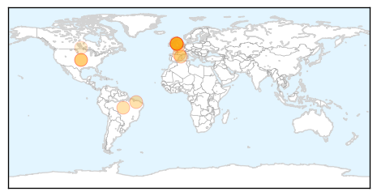
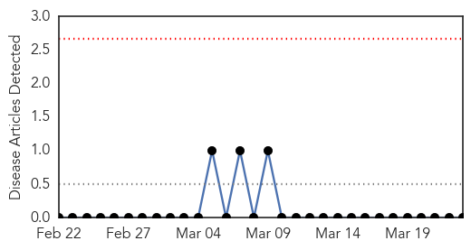

Dengue Fever
30-Day Web Trend
1 alerts, 0 warnings

30-Day Twitter Trend
0 alerts, 0 warnings

Article Locations
Article Confidences

Top Articles:
- 0.988
- Insect-borne diseases increase with warmer climate
- 0.978
- UK can expect mosquito-borne diseases as climate warms, say experts
- 0.966
- Deadly mosquito-borne diseases could threaten UK within decades, experts warn
- 0.965
- Globavir Announces a Partnership with BioManguinhos/Fiocruz for a Joint Evaluation of Dengue Diagnostic Tests
- 0.964
- Global warming: Risk of UK mosquito-borne diseases
- 0.964
- Globavir Announces a Partnership with BioManguinhos/Fiocruz for a Joint Evaluation of Dengue Diagnostic Tests
- 0.960
- Globavir Announces a Partnership with BioManguinhos/Fiocruz for a Joint Evaluation of Dengue Diagnostic Tests - News Press Release
- 0.920
- Another reason to fear climate change
- 0.866
- Climate change 'might bring rise in UK mosquito-borne diseases'
- 0.819
- Deadly Mosquitoes En Route to Britain
- 0.691
- Mosquitoes could bring deadly tropical diseases to the UK as climate change kicks in
- 0.583
- Winnipeg has been spraying a deadly neurotoxin in the air for years? At least the mosquitoes are dead...
- 0.518
- Mosquitoes remain public enemy number one
- 0.504
- When it comes to nature's public enemy number one, the mosquito is a modern monster
Top Tweets:
-
No tweets found for Mar 23, 2015
Mumps
30-Day Web Trend
0 alerts, 0 warnings

30-Day Twitter Trend
0 alerts, 0 warnings

Article Locations

Article Confidences

Top Articles:
-
No articles found for Mar 23, 2015
Top Tweets:
-
No tweets found for Mar 23, 2015